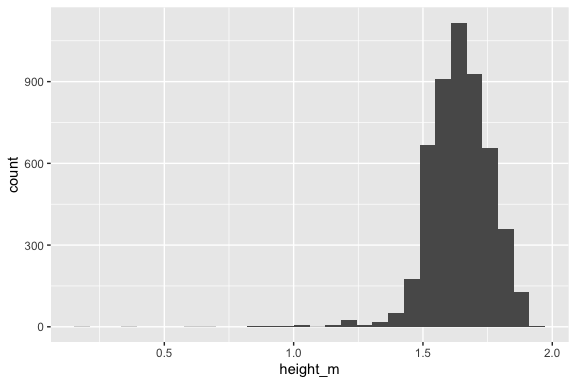
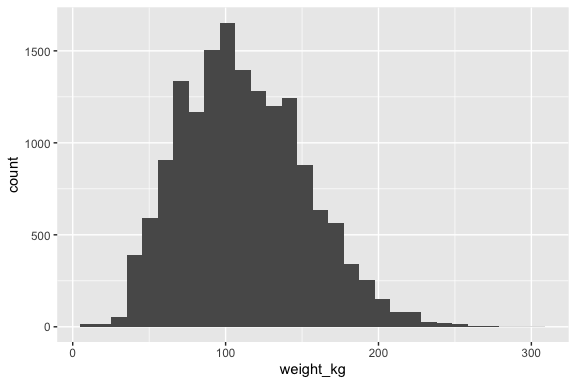

library(tidyverse)
library(readxl)
library(janitor)
library(here)
library(skimr)
library(lubridate)Wrangling
1 Patients
patients <- read_delim(here("data","Levantamento_GLPI_58686_Sol_123_2023_Pacientes.csv"), delim = ";") %>%
janitor::clean_names() %>%
mutate(
birthdate = dmy(dta_nascimento),
race = as.factor(raca_etnia),
sex = as.factor(idf_sexo),
death_date = dmy(dta_obito),
date = dmy(dta_hor_consulta)
) %>%
arrange(desc(death_date)) %>%
select(
record_id = registro,
birthdate,
race,
sex,
death_date
) %>%
distinct(record_id, .keep_all = TRUE)
skimr::skim(patients)| Name | patients |
| Number of rows | 872 |
| Number of columns | 5 |
| _______________________ | |
| Column type frequency: | |
| character | 1 |
| Date | 2 |
| factor | 2 |
| ________________________ | |
| Group variables | None |
Variable type: character
| skim_variable | n_missing | complete_rate | min | max | empty | n_unique | whitespace |
|---|---|---|---|---|---|---|---|
| record_id | 0 | 1 | 8 | 8 | 0 | 872 | 0 |
Variable type: Date
| skim_variable | n_missing | complete_rate | min | max | median | n_unique |
|---|---|---|---|---|---|---|
| birthdate | 0 | 1.0 | 1927-01-18 | 2014-11-30 | 1975-01-29 | 852 |
| death_date | 785 | 0.1 | 2016-04-03 | 2023-12-04 | 2021-04-06 | 86 |
Variable type: factor
| skim_variable | n_missing | complete_rate | ordered | n_unique | top_counts |
|---|---|---|---|---|---|
| race | 0 | 1 | FALSE | 5 | Bra: 664, Mul: 129, Pre: 72, VER: 5 |
| sex | 0 | 1 | FALSE | 2 | F: 553, M: 319 |
The patients dataset consists of 872 unique participants and 5 variables, encompassing patient identifiers, demographic characteristics, and dates of birth and death. The record_id variable (character) serves as a unique identifier, with all values having a fixed length of 8 characters and no missing data. The dataset includes two date variables: birthdate, which is fully complete and ranges from January 18, 1927, to November 30, 2014, with a median birthdate of January 29, 1975; and death_date, which has 785 missing values (89.9%), indicating that most participants are still alive. The race variable (factor) has 5 categories, with the most common being “Branco” (white, 664 participants), followed by “Pardo” (mixed-race, 129 participants) and “Preto” (Black, 72 participants). The sex variable (factor) has two categories, with 553 females (63.4%) and 319 males (36.6%). The dataset is well-structured, with complete demographic information and some missing data in the mortality records.
2 Consultations
consultas <- read_delim(here("data","Levantamento_GLPI_58686_Sol_123_2023_Pacientes.csv"), delim = ";") %>%
janitor::clean_names() %>%
mutate(
date = dmy(dta_hor_consulta),
) %>%
select(
record_id = registro,
date) %>%
mutate(
age = as.numeric( # Converts duration object to numeric value
(date - patients$birthdate) / dyears(1) # dyears(1) from lubridate: represents the duration of one year (365.25 days), ensuring leap years are accounted for.
)
)
skimr::skim(consultas)| Name | consultas |
| Number of rows | 5212 |
| Number of columns | 3 |
| _______________________ | |
| Column type frequency: | |
| character | 1 |
| Date | 1 |
| numeric | 1 |
| ________________________ | |
| Group variables | None |
Variable type: character
| skim_variable | n_missing | complete_rate | min | max | empty | n_unique | whitespace |
|---|---|---|---|---|---|---|---|
| record_id | 0 | 1 | 8 | 8 | 0 | 872 | 0 |
Variable type: Date
| skim_variable | n_missing | complete_rate | min | max | median | n_unique |
|---|---|---|---|---|---|---|
| date | 0 | 1 | 2016-01-19 | 2023-10-24 | 2019-05-14 | 367 |
Variable type: numeric
| skim_variable | n_missing | complete_rate | mean | sd | p0 | p25 | p50 | p75 | p100 | hist |
|---|---|---|---|---|---|---|---|---|---|---|
| age | 0 | 1 | 45.26 | 15.18 | 1.54 | 34.63 | 44.59 | 56.11 | 95.86 | ▁▆▇▃▁ |
The consultas dataset contains 5,212 observations across 2 variables, representing multiple consultation records for 872 unique participants. The record_id variable (character) serves as a unique identifier for each patient, with all values having a fixed length of 8 characters and no missing data. The date variable (Date) captures the consultation dates, spanning from January 19, 2016, to October 24, 2023, with 367 unique dates. The dataset is fully complete, with no missing values, and provides a structured timeline of patient consultations.
2.1 Age at consultation
underage <- consultas %>%
filter( age < 18
) %>%
distinct(record_id, .keep_all = TRUE)
sum(consultas$age < 18)[1] 168adults <- consultas %>%
filter( age >= 18
) %>%
distinct(record_id, .keep_all = TRUE)
common_record_ids <- intersect(underage$record_id, adults$record_id)A total of 146 patients were seen in the clinic while underage, accounting for 168 consultations. Of these, 138 continued follow-up after reaching adulthood, leaving only 8 patients who remained underage throughout the entire follow-up period.
3 Anthropometric measures
monitorizacao <- read_excel(here("data","Levantamento_GLPI_58686_Sol_123_2023_Monitorizacao_Isabela.xlsx"), sheet = 1) %>%
select(
record_id, type, date, value
)
weight <- monitorizacao %>%
filter(
type == "weight_kg"
) %>%
select(
record_id, date, value
) %>%
rename(
weight_kg = value
)
alturas_faltantes <- read_excel(here("data","alturas_faltantes.xlsx")) %>% janitor::clean_names() %>%
filter(
!is.na(altura_metros_ponto_como_separador_decimal)
) %>%
select(
record_id = registro,
height_m = altura_metros_ponto_como_separador_decimal
) %>%
mutate(
date = as.POSIXct(NA)
)
height <- monitorizacao %>%
filter(
type == "height_m"
) %>%
select(
record_id, date, value
) %>%
rename(
height_m = value
) %>%
rbind(., alturas_faltantes) %>%
mutate(
height_m = as.numeric(height_m)
)
rm(monitorizacao)
rm(alturas_faltantes)3.1 Height
skimr::skim(height)| Name | height |
| Number of rows | 5066 |
| Number of columns | 3 |
| _______________________ | |
| Column type frequency: | |
| character | 1 |
| numeric | 1 |
| POSIXct | 1 |
| ________________________ | |
| Group variables | None |
Variable type: character
| skim_variable | n_missing | complete_rate | min | max | empty | n_unique | whitespace |
|---|---|---|---|---|---|---|---|
| record_id | 0 | 1 | 8 | 8 | 0 | 856 | 0 |
Variable type: numeric
| skim_variable | n_missing | complete_rate | mean | sd | p0 | p25 | p50 | p75 | p100 | hist |
|---|---|---|---|---|---|---|---|---|---|---|
| height_m | 0 | 1 | 1.64 | 0.12 | 0.2 | 1.56 | 1.65 | 1.72 | 1.96 | ▁▁▁▅▇ |
Variable type: POSIXct
| skim_variable | n_missing | complete_rate | min | max | median | n_unique |
|---|---|---|---|---|---|---|
| date | 76 | 0.98 | 2016-01-21 | 2023-10-26 | 2019-02-05 | 1355 |
ggplot(height, aes(height_m)) + geom_histogram()
The height dataset contains 5,066 observations across 3 variables, representing repeated height measurements for 856 unique participants over time. The record_id variable (character) serves as a unique identifier for each participant. The height_m variable (numeric) records height in meters, with values ranging from 0.2 to 1.96 meters, a mean of 1.64 meters, and a standard deviation of 0.121. No missing values are present in this column. The date variable (POSIXct) captures the measurement date, spanning from January 21, 2016, to October 26, 2023, with 1,355 unique dates. The dataset is complete, except for 76 missing values in the date column, resulting in a 98.5% completeness rate for dates. These missing values correspond to height measurements that were not originally included in the dataset exported by the hospital’s data center but were manually collected from records.
3.1.1 Grouping by record_id
height_summarise <- height %>%
group_by(record_id) %>%
summarise(
count_age = n(),
mean_age = mean(height_m, na.rm = TRUE),
stdev_age = stats::sd(height_m, na.rm = TRUE)
) %>%
ungroup()3.2 Weight
skimr::skim(weight)| Name | weight |
| Number of rows | 15792 |
| Number of columns | 3 |
| _______________________ | |
| Column type frequency: | |
| character | 1 |
| numeric | 1 |
| POSIXct | 1 |
| ________________________ | |
| Group variables | None |
Variable type: character
| skim_variable | n_missing | complete_rate | min | max | empty | n_unique | whitespace |
|---|---|---|---|---|---|---|---|
| record_id | 0 | 1 | 8 | 8 | 0 | 862 | 0 |
Variable type: numeric
| skim_variable | n_missing | complete_rate | mean | sd | p0 | p25 | p50 | p75 | p100 | hist |
|---|---|---|---|---|---|---|---|---|---|---|
| weight_kg | 0 | 1 | 112.1 | 40.27 | 6 | 82 | 108 | 139.5 | 300 | ▂▇▅▁▁ |
Variable type: POSIXct
| skim_variable | n_missing | complete_rate | min | max | median | n_unique |
|---|---|---|---|---|---|---|
| date | 0 | 1 | 2016-01-19 | 2023-10-26 | 2019-03-27 | 2053 |
ggplot(weight, aes(weight_kg)) + geom_histogram()
The weight dataset contains 15,792 observations across 3 variables, representing repeated weight measurements for 862 unique participants over time. The record_id variable (character) uniquely identifies each participant. The weight_kg variable (numeric) captures weight in kilograms, ranging from 6 to 300 kg, with a mean of 112 kg and a standard deviation of 40.3 kg. No missing values are present in this column. The date variable (POSIXct) records the measurement date, spanning from January 19, 2016, to October 26, 2023, with 2,053 unique dates. The dataset is complete, with no missing values in any column.
4 Joining consultations, height and weight
Issue:
I want to create a new df based on consultas such that this new df will have 2 additional columns, height_m and weight_kg. Naturally, height_m and weight_kg should be matched by record_id. However, this is a longitudinal database, so record_id might appear multiple times in the spreadsheets.
Ideally, the new df shoudl have the height_m and weight_kg that matches the record_id as well as the date. However, some rows from consultas might not have exact date matches for height_m and weight_kg. In that case, the new df should match height_m and weight_kg by the date closest to the actual date of the consultation.
There are several solutions to this problem: using fuzzyjoin, data.table, or purr. If you’re looking for the simplest approach, fuzzyjoin is the easiest to learn as it closely follows dplyr syntax and allows fuzzy matching with minimal effort. If speed and efficiency are your priority, especially with large datasets, data.table is the fastest, using optimized rolling joins (roll = “nearest”) but has a steeper learning curve. For a pure Tidyverse solution, purrr offers the most flexibility but requires complex row-wise operations and is harder to master.
4.1 Height
library(fuzzyjoin)
# Perform the fuzzy join on record_id
fuzzy_height <- fuzzy_left_join(
consultas, height,
by = c("record_id" = "record_id"),
match_fun = list(`==`)
)
# Checking the column names in joined_df: you'll see "record_id.x" from consultas and "record_id.y" from height.
# Compute the absolute date difference using the consultation date (date.x) and the height date (date.y)
fuzzy_height <- fuzzy_height %>%
mutate(date_diff = abs(as.numeric(difftime(date.x, date.y, units = "days"))))
# For each consultation (identified by record_id.x and the consultation date date.x), select the row with the minimum date difference.
consultas_new <- fuzzy_height %>%
group_by(record_id.x, date.x) %>%
slice_min(order_by = date_diff, with_ties = FALSE) %>%
ungroup() %>%
# Rename columns for clarity
rename(record_id = record_id.x,
consult_date = date.x,
height_date = date.y,
date_diff_height = date_diff) %>%
select(
record_id, consult_date, age, height_m, date_diff_height
)4.2 Weight
We’ll follow a similar process to the height join. The idea is to perform a fuzzy join on record_id, calculate the absolute difference between the consultation date (already stored as consult_date in consultas_new and the weight measurement date (stored in weight’s date, then for each consultation choose the weight record with the minimum difference.
# Perform the fuzzy join on record_id for weight
fuzzy_weight <- fuzzy_left_join(
consultas_new, weight,
by = c("record_id" = "record_id"),
match_fun = list(`==`)
)
# Compute the absolute date difference using the consultation date (consult_date) and the weight measurement date (date from weight)
fuzzy_weight <- fuzzy_weight %>%
mutate(date_diff = abs(as.numeric(difftime(consult_date, date, units = "days"))))
# For each consultation (identified by record_id.x and consult_date), select the row with the minimum date difference
consultas_final <- fuzzy_weight %>%
group_by(record_id.x, consult_date) %>%
slice_min(order_by = date_diff, with_ties = FALSE) %>%
ungroup() %>%
# Rename columns for clarity
rename(record_id = record_id.x,
weight_date = date,
date_diff_weight = date_diff) %>%
mutate(
bmi = weight_kg / (height_m * height_m)
) %>%
select(record_id, consult_date, age, height_m, date_diff_height, weight_kg, weight_date, date_diff_weight, bmi)